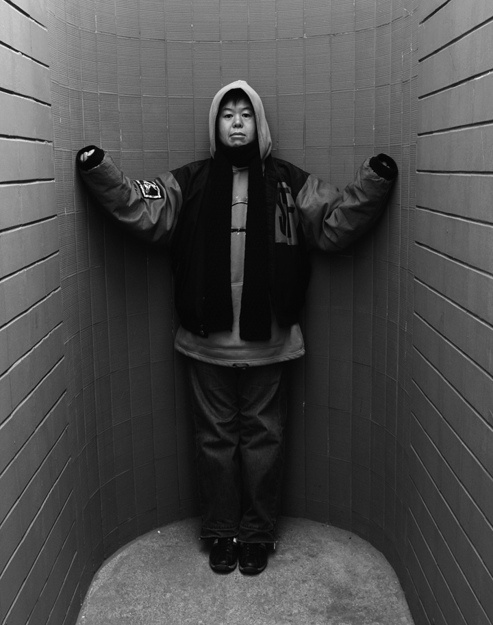

An Offending Conceptual Artist Yan Lei
Cui Zien
In 1995, Yan Lei held his one-man installation exhibition Invasion. Among the arts exhibited was 323cm,a works composed of photo, video and material object. The photo was about a sow waiting for slaughter, on whose right flank Yan painted out a 323cm white box. The video recorded the whole course of the slaughtering and how the meatloaf in the 323cm box was cut off. This piece of meat was kept in a glass bottle, as the last part of the art.
From the static photo to the acting video, then back to the static object again, this symbol system revealed the relations between life and death, legalized slaughter and public exhibition, human being and animal, food and sample, foods source and foods destination. But all these relations were questioned and overturned by Yan. when a living animal falls into humans eyes, it is no longer a living creature with right to live as human but a meatloaf. Killing animal is always legalized. Lawless people are often seen as animal, not because they are more ferocious than animal, but because we can easily find excuses to kill them as we do to animal.
Starting from the fundamental question about whether art is art, Yans conceptual artworks incisively, penetratingly and revolutionarily analyzed our spiritual world, then launched an offensive against the established world so as to subvert it finally.
Entering Yans art kingdom, people cant help trembling, palpitating. They will lose the sense of security, feel being interrogated, threatened to suffocation. Yans challenge is ubiquitous.
On the same exhibition, another works 1500cm was noticeable as well. On the screen of a monitor, we saw Yan measured out a 1500cm piece of string, washed it by Goldfish Detergent, and put it on a porcelain dish which made the string like a roll of noodles. Then he sat down, began to eat the string. After swallowing down the whole string, he brought out a glass coffee bottle, pulling the string out from his mouth into the bottle. Now the noodles seemed being transformed into intestines, which was drawn out from Yans abdomen. At this moment, Yan went out, leaving the back of a chair, the tabletop with that bottle. Now the noodles seemed being transformed into intestines, which was drawn out from Yans abdomen. At this moment, Yan went out, leaving the back of a chair, the tabletop with that bottle on it on the scene. The bottle looked like a persons abdomen containing a 1500cmlong string which had traveled through all the intestines and stomach of a human being.
When this video was played in the art departments of Beijing Film Academy, Lu Xun Literature Academy and Beijing Normal University, Viewers reactions varied extremely: some shocked by it, some rejecting it, some despising it or even focused on whether Yan really swallowed down the string. But a common reaction was: feeling hurt more or less.
Was Yans installation art hurtful?
He hurt himself at first place. In works No.0310007, a combination of photo, video, injury report and assistants, Yan made himself a victim of violence. The video recorded faithfully how the artist himself was being beaten, instead of taking down others suffering as traditional documentary did. Yan did not allow himself to be an onlooker. He became a part of the violence, the victim of the violence.
In another works No.0023283E, Yan turned up as a victim on a photo once again. One and half of his teeth had been beaten down, his left cheek was black and blue, blood shedding from his nose and mouth stained his neck and clothes. Both of the works were titled with number of medical records.
Who were being tortured? Who made the violence? Who suffered the consequences of the violence? Yan presented these questions to us by his body.
However, in 1996s works Absolutely Safe, Yan extracted his body out. A monitor playing program was laid on the polished floor which the light and shadow of the reflection. If anyone barefoot cup littered on it, if the images on the screen were turned into reality, someone would be hurt by the porcelain bits. This scene implied a potential bloodshed with no blood on it. The porcelain pieces, the notice on the bulletin board and the images protected by the monitor screen, composed a horrible scene unavoidable in modern society. Where could we find an absolutely safe place?
In the same year, Yan published his acrylic painting Are You Among the Invited to the German Exhibition? In front of a background of blue sky and red flag, gravely stands a masked fencer, his left hand holding a sword, a typical and standard gesture made before or after a game in the Olympic spirit?
Was he or she a token of pure blood? Did he or she mean a nationalism or individualism? Would he or she become the champion? Or be reduced to a tragic minor role under the champion-centered Olympic spirit?
From then on, Yan had been unswervingly criticizing and negating the established art-centered or artist-centered system. Are You Among the Invited to the German Exhibition? The works questioned the justification for artists desire for the recognization of international society, and doubted the arts competitiveness. Today, art activities get more and more like the Olympic Games. Artists bid for the entry to exhibition just like athletes vying for qualification for the entrance of the games. Is a system like this worth peoples trust or even ingratiating?
Consequently, Yan forged invitations to an international art exhibition and sent them out to scores of artists. When the artists receiving the invitation realized they had been fooled, and those receiving none felt cold-shouldered, Yan and his accomplice, Hong Hao, published an apology letter on Jiang Su Pictorial magazine. At this moment, this behavior artwork seemed to have been completed finally. However, the pains caused by it still turned up constantly in the art system. The elitism strategy in the name of art began to crumble thereafter, and headed for the final collapse.
Yan is an ant digging hard into the age-old dike of art, not for a nest to settle down, but for destroying only.
Welcome Yan Lei to Shanghai (1997) is one of installations created by Yan after he migrated to Hong Kong. On the international art exhibition held in Shanghai Modern Art Gallery, a large banner written "Welcome Yan Lei to Shanghai" was hung in the central showroom of the gallery, seemingly bringing out the theme of the whole exhibition. Artists attending the exhibition took great effort to evade the banner, for fear that they would be seen as a minor role or appendage of Yan. Undoubtedly, the banner made Yan into a "big shot", as only VIP deserved such a special treatment. But should a real artist be a VIP? Or should it be the goal for artist to become a VIP?
No one welcomed Yan to Shanghai in reality. No one regarded Yan as a VIP either. But no one could ignore the spectacular stir made by this Yan-or -VIP effect. Yan aimed directly at himself in this works. By this way, Yan shot the artists preoccupied with their position in art hierarchy by shooting at himself, defied them openly by offending himself. In this view, Yan s ideological revolution started from overthrowing the traditional concepts about art and artist. The criticalness of his motives and actions as well as the thoroughness of this criticalness was disclosed in these artworks.
However, in 1998 and 1999, Yan claimed that he had changed. Did he really change?
What happened to Yan was more like a "transformation" than "change." In his art This Way to Kassel (1998, Hong Kong Qie Airport), the identities of both art and artist faded out. The works only shows viewers a place leading to all directions with numerous nameless people taking photo in this famous place. So many destinations we can go and so many ways we can choose. Doesnt it imply that the artist-centered or art-holy times should end or has ended already?
As a consequence, Yan entered a brothel in Shenzhen suburb as a client, became a passenger in a coach going to some place in Heibei province from Beijing. He focused his camera on what were going on in these places. What he recorded were nothing but the exact scenes he saw as a client, as a passenger, scenes in ordinary life without any drama, without any climax or leading role.
He did not pretend to proletarianize the art, he did not intend to find out a new benchmark for the art values. What these works reflected was only Yan s renunciation after criticism: art or artist is no longer associated with any prerogative. The gap between art and ordinary life is not as wide as people defined or supposed. The great disparity has been used as a secret weapon to construct culture for a long period of time. Annihilating the mythology of art is critical for us to get out of the swamp of power. The job of today s artists is not to fortify the established power, but to smash it, like what Yan is doing.
Without the mask of the so-called art, what kind of arts can we create? This question is what we need to think through today.
Cui Zien

Cui Zi’en
M.A., Chinese Academy of Social Sciences. He is now a research fellow of the Beijing Film Academy. He is an independent director, screenwriter and producer. His works include Enter the Clowns (2002), THE OLD TESTAMENT (2002)，Feeding Boys,Ayaya（2003）， My Fair Son (2007) and Queer China ,‘Comrade’ China (2009). His works have been presented in Flanders International Film Festival, Vancouver International Film Festival, Hong Kong International Film Festival, London Film Festival, Berlin Internationale Filmfestspiele，Pusan International Film Festival and many universities in the USA.